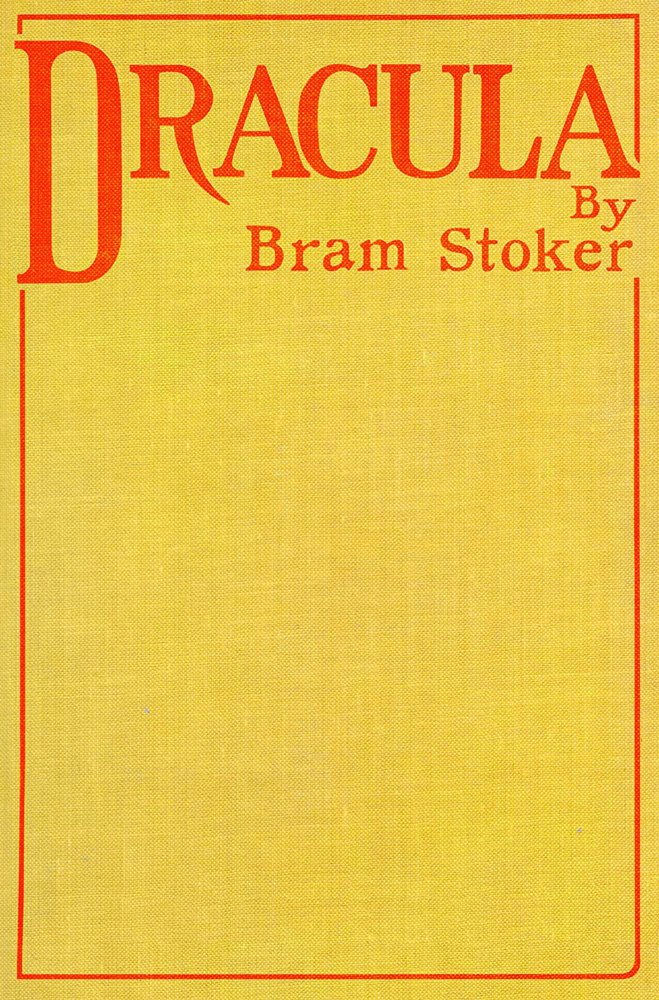
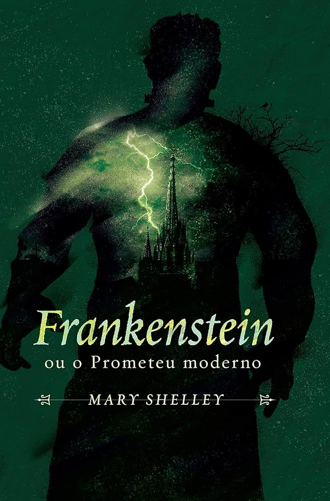
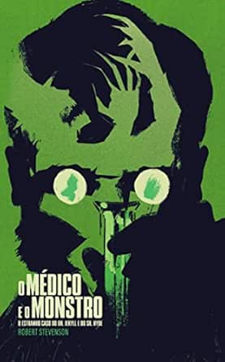
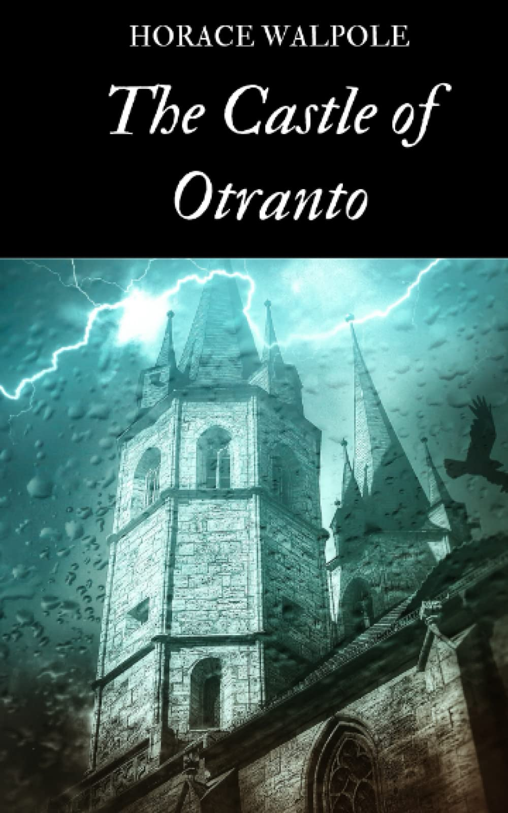
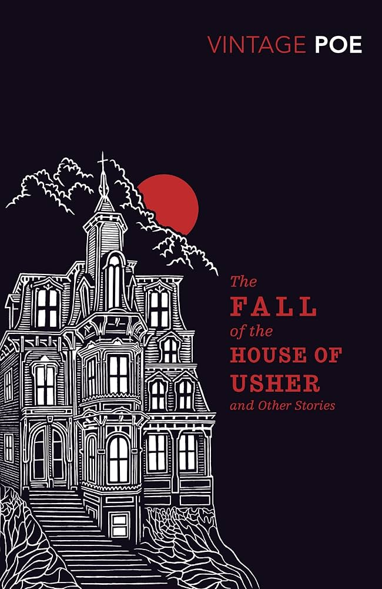
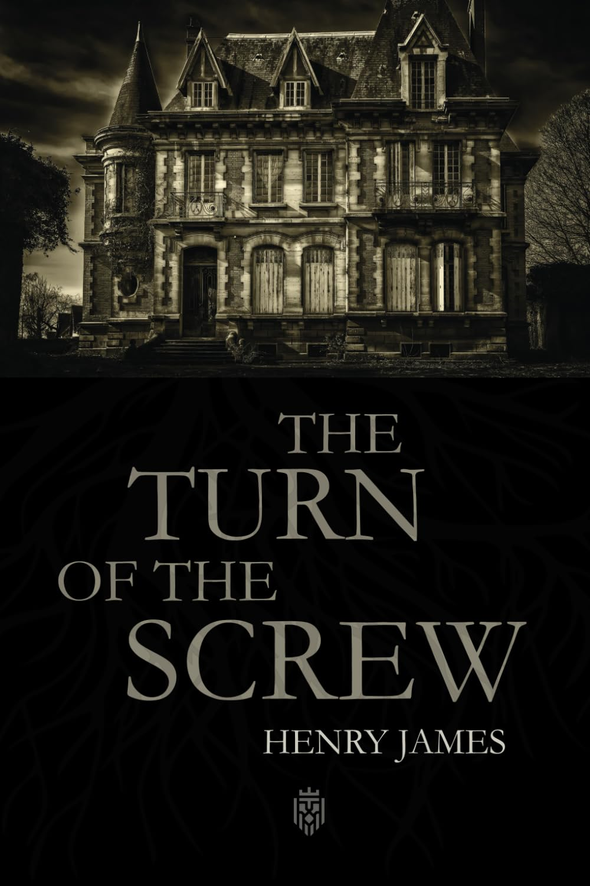

Livros de Terror

Dracula
Bram Stoker
Vampiros
A clássica história de vampiros, mistério e horror escrita por Bram Stoker.
Abrir Livro 📖

Frankenstein
Mary Shelley
Monstros
A historia do dr frankestein e o monstro que ele criou.
Abrir Livro 📖

Strange Case of Dr Jekyll and Mr Hyde
Robert Louis Stevenson
Dupla personalidade
Conto de horror e dupla personalidade: o médico Dr Jekyll e Mr Hyde.
Abrir Livro 📖

The Castle of Otranto
Horace Walpole
Primeiro romance gótico
Primeiro romance gótico — mistério, sobrenatural e suspense.
Abrir Livro 📖

The Fall of the House of Usher
Edgar Allan Poe
Horror psicológico
Conto gótico de decadência, isolamento e horror psicológico.
Abrir Livro 📖

The Turn of the Screw
Henry James
Mistério sobrenatural
Uma governanta é contratada para cuidar de duas crianças em uma mansão isolada, eventos sobrenaturais acontecem.
Abrir Livro 📖